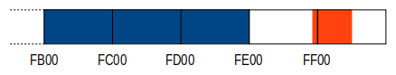

Le pagine degli appunti. Click sulle immagini per ingrandirle.
risorse | salvaschermo per zx spectrum 48k
In un vecchio quaderno ho trovato alcuni appunti che spiegano come realizzare un salvaschermo per lo ZX Spectrum 48K in linguaggio macchina. Riportano la data del 6 settembre 1987:
|
|
|
Le pagine degli appunti. Click sulle immagini per ingrandirle. |
||
Ecco come viene presentata la routine:
Questa utility ha il compito di ridurre i consumi elettrici durante la stesura del programmi. Spesso accade, infatti, che il monitor rimane acceso per lunghi periodi di tempo, ed è praticamente inutilizzato (di solito durante le lunghe riflessioni sui listati); ecco quindi che la routine, dopo un periodo di tempo regolabile (inizialmente 30 secondi) in cui la tastiera è rimasta inutilizzata, “spegne” il monitor, oscurando completamente il video. La situazione rimane tale fino alla prossima pressione di un tasto qualsiasi (SHIFT compresi). La routine è lunga un centinaio di byte, allocata nelle ultime 5 pagine della RAM (3 usate per la memorizzazione dei colori). Non è rilocabile in quanto usa le interrupt vettorizzate (modo 2).
Alla descrizione segue il listato assembly della routine salvaschermo:
Addr Data Label OpCode Comment
-------------------------------------------------------------------------------
ATTRS equ $fb00 ; buffer per il salvataggio degli
; attributi durante il "black-out"
FEEE F3 di
FEEF 21 6A B0 ld hl,COUNTER ; azzeramento del contatore di
FEF2 36 00 ld (hl),$00 ; frame passati senza che l'utente
FEF4 23 inc hl ; abbia premuto un tasto
FEF5 36 00 ld (hl),$00
FEF7 3E FE ld a,$fe ; attivazione delle interruzioni
FEF9 ED 47 ld i,a ; vettorizzate (l'entry point
FEFB ED 5E im 2 ; dell'interrupt handler si trova
FEFD FB ei ; all'indirizzo $feff)
FEFE C9 ret
FEFF 01 db $01 ; indirizzo dell'interrupt handler
FF00 FF db $ff ; ($ff01)
FF01 F5 push af ; entry point dell'interrupt handler
FF02 C5 push bc
FF03 D5 push de
FF04 E5 push hl
FF05 2A 6A B0 ld hl,(COUNTER) ; carica il valore del contatore
FF08 DB FE in a,($fe) ; l'utente sta premendo un tasto?
FF0A 2F cpl
FF0B E6 1F and $1f
FF0D 20 3B jr nz,RESET ; se sì, azzera il contatore ed esci
FF0F 23 inc hl ; no, perciò incrementa il contatore
FF10 22 6A B0 ld (COUNTER),hl
FF13 3E 06 ld a,$06 ; sono passati più di 30 secondi
FF15 94 sub h ; dall'ultima volta che è stato
FF16 20 38 jr nz,END ; premuto un tasto? se no, esci
FF18 F3 di ; se sì...
FF19 21 00 58 ld hl,$5800 ; copia l'area degli attributi dello
FF1C E5 push hl ; schermo nel buffer temporaneo
FF1D 11 00 FB ld de,ATTRS
FF20 01 00 03 ld bc,$0300
FF23 C5 push bc
FF24 ED B0 ldir
FF26 C1 pop bc
FF27 E1 pop hl
FF28 3A 48 5C ld a,($5c48) ; memorizza il colore del bordo
FF2B 08 ex af,af' ; attuale in A'
FF2C 36 00 BLACK ld (hl),$00 ; scurisci tutto lo schermo...
FF2E 23 inc hl
FF2F 7C ld a,h
FF30 FE 5C cp $5c
FF32 20 F8 jr nz,BLACK
FF34 AF xor a
FF35 D3 FE out ($fe),a ; ...bordo compreso
FF37 DB FE WAIT in a,($fe) ; attendi la pressione di un tasto
FF39 2F cpl
FF3A E6 1F and $1f
FF3C 28 F9 jr z,WAIT
FF3E 21 00 FB ld hl,ATTRS ; ripristina l'area degli attributi
FF41 11 00 58 ld de,$5800 ; dello schermo allo stato originale
FF44 ED B0 ldir
FF46 08 ex af,af' ; ripristina il colore del bordo
FF47 32 48 5C ld ($5c48),a
FF4A 26 00 RESET ld h,$00 ; azzera il contatore di frame
FF4C 6C ld l,h ; passati dall'ultima pressione di
FF4D 22 6A B0 ld (COUNTER),hl ; un tasto
FF50 E1 END pop hl
FF51 D1 pop de
FF52 C1 pop bc
FF53 F1 pop af
FF54 FB ei
FF55 C3 38 00 jp $0038 ; prosegui con l'interrupt handler
; di sistema...
FF58 00 COUNTER db $00 ; contatore di frame trascorsi
FF59 00 db $00 ; dall'ultima pressione di un tasto
Funziona veramente? Ho caricato in Fuse, l'emulatore che uso di solito, il nastro di CHAMP, uno degli assemblatori che usavo al tempo, e ho cominciato a ricopiare il listato:
Il listato del salvaschermo in CHAMP
Dopo qualche minuto di lavoro ero in condizione di lanciare l'assembler:
Responso dell'assembler
CHAMP non permette di fissare l'inidirizzo di origine del codice macchina nell'area di memoria prevista per la routine del salvaschermo. Ho perciò scelto di lavorare più in basso, all'indirizzo $b000, ricordandomi di caricare il codice macchina all'indirizzo $feee per il lancio; poiché i cicli interni usano salti relativi, non corro rischi di sorta a eseguire il codice in una zona di memoria diversa rispetto a dove è stato assemblato.
Come da buona abitudine in questi casi, prima di attivare il salvaschermo ho salvato sia il codice sorgente che quello compilato. Fortunatamente non ho tralasciato nessun dettaglio durante la trascrizione ed il codice compilato funziona perfettamente. Per vederlo in azione è sufficiente caricare il nastro screensaver.tzx nell'emulatore e dare i comandi:
CLEAR 64255 LOAD "SCRSVR"CODE 65262 RANDOMIZE USR 65262
Il codice si aggancia alla routine del sistema operativo che effettua la scansione della tastiera, azzerando un contatore interno ogni volta che viene premuto un tasto. Nel caso il valore assunto dal contatore indica che sono trascorsi più di 30 secondi dall'ultima pressione di un tasto il codice oscura lo schermo ed entra in un ciclo dal quale si esce alla successiva pressione di un tasto; all'uscita del ciclo lo schermo viene riportato allo stato originale.
La routine che si occupa della scansione della tastiera si trova all'indirizzo $0038 (cfr. “Routine at 0038” in «The Complete Spectrum ROM Disassembly»). Durante il suo normale funzionamento lo Spectrum genera un'interruzione mascherabile all'inizio di ogni quadro video (cfr. “Interrupts” in «L BREAK into program»); poiché lo Spectrum opera in modalità IM 1, nella quale la ricezione di un'interruzione causa il salto all'indirizzo $0038, la routine di scansione della tastiera viene richiamata ogni 20ms (lo ZX Spectrum genera infatti 50 quadri video al secondo).
Il codice si aggancia alla routine di scansione della tastiera attivando le interruzioni vettorizzate. Quando lo Z80 opera in modalità IM 2, alla ricezione di un'interruzione costruisce un indirizzo a 16 bit utilizzando il contenuto del registro I come byte più significativo e lo stato del bus dati in quell'istante (assunto essere $ff) come byte meno significativo; tale indirizzo viene utilizzato per accedere in RAM e leggere un indirizzo a 16 bit che rappresenta l'indirizzo cui si trova l'interrupt handler. Nel dettaglio, il salvaschermo carica nel registro I il valore $fe, di fatto fissando l'indirizzo dell'entry point dell'interrupt handler a $feff. Poiché alle celle di indirizzo $feff e $ff00 il codice attribuisce rispettivamente i valori $01 e $ff, $ff01 è l'indirizzo di inizio della routine del salvaschermo.
La prima parte del codice della routine del salvaschermo si occupa di incrementare un contatore a 16 bit ad ogni invocazione, quindi ogni 20ms, azzerandolo nel caso in cui un tasto risulti premuto in quel preciso istante. Se ciò non è, il codice determina quanto tempo è passato dall'ultima volta che un tasto è stato premuto verificando il valore del byte più significativo del contatore. Poiché il contatore viene incrementato ogni 20ms, il byte più significativo aumenta di un'unità ogni 256×20ms = 5.12s, raggiungendo il valore di 6 dopo poco più di 30s. Questo è dunque il valore che deve assumere il byte più alto del contatore affinché venga attivato il salvaschermo.
L'oscuramento si ottiene azzerando i valori di BORDER, PAPER e INK su tutta l'area dello schermo. Lo stato dei pixel non viene modificato, ciò che cambia sono gli attributi associati alle posizioni carattere. Dovendo ripristinare lo stato dello schermo alla successiva pressione di un tasto, prima di procedere con l'oscuramento occorre salvare gli attributi correnti. Per far ciò la routine ricopia l'area preposta in un buffer temporaneo, mentre il colore del bordo viene ricavato dal valore della variabile d'ambiente BORDCR e conservato nel registro A'. Durante l'oscuramento il codice entra in un ciclo interno durante il quale non viene richiamata la routine di scansione della tastiera: per tale ragione il resto del sistema entra in una sorta di stato di ibernazione. L'uscita dal ciclo avviene in corrispondenza della pressione di un tasto qualunque.
A distanza di più di trent'anni mi sento di fare alcune critiche al codice:
sarebbe opportuno assegnare un nome parlante ai magic numbers $5800 e $5c48 che appaiono nel listato, considerato ciò che rappresentano:
ATTRS equ $5800 ; indirizzo di inizio dell'area
; degli attributi dello schermo
BORDCR equ $5c48 ; variabile di sistema che contiene
; il colore attuale del bordo
BUFFER equ $fb00 ; buffer per il salvataggio degli
; attributi durante il "black-out"
c'è spazio per ottimizzare il layout del codice in memoria:
si potrebbe per esempio traslare il buffer degli attributi a ridosso del codice;
In blu il buffer per gli attributi, in arancio il codice
il codice potrebbe essere reso più consistente; per esempio la variabile COUNTER viene azzerata in due modi diversi in due contesti diversi senza una valida ragione:
FEEF 21 6A B0 ld hl,COUNTER FEF2 36 00 ld (hl),$00 FEF4 23 inc hl FEF5 36 00 ld (hl),$00
FF4A 26 00 RESET ld h,$00 FF4C 6C ld l,h FF4D 22 6A B0 ld (COUNTER),hl
manca l'indicazione su come configurare il salvaschermo, per esempio:
POKE 65300,INT (time/5.12)
Pagina modificata il 24/05/2020